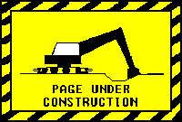

There are a lot of reasons I enjoy games. They are, for one, very fun. However, my love of games stems from an appreciation of their ability to shape our experiences and values in satisfying ways. Games teach us things about how to be different versions of ourselves which I think helps us to be better people. The thing I love most about gaming is the short period where you are completely clueless about the meta, and have to invent your own tactics to best achieve your goals. For me, games are the perfect little intellectual treats that really help me to think laterally and test myself
I tend to gravitate towards single-player games with strong strategy or tactical aspects. I also enjoy a certain level of mechanical complexity as it requires a lot of relearning and creativity in its own right. However, I can get bored of games very quickly once I figure them out. This can be due to a game's lack of depth, ease of difficulty, or my spoiling of the game in the pursuit of efficiencies.
